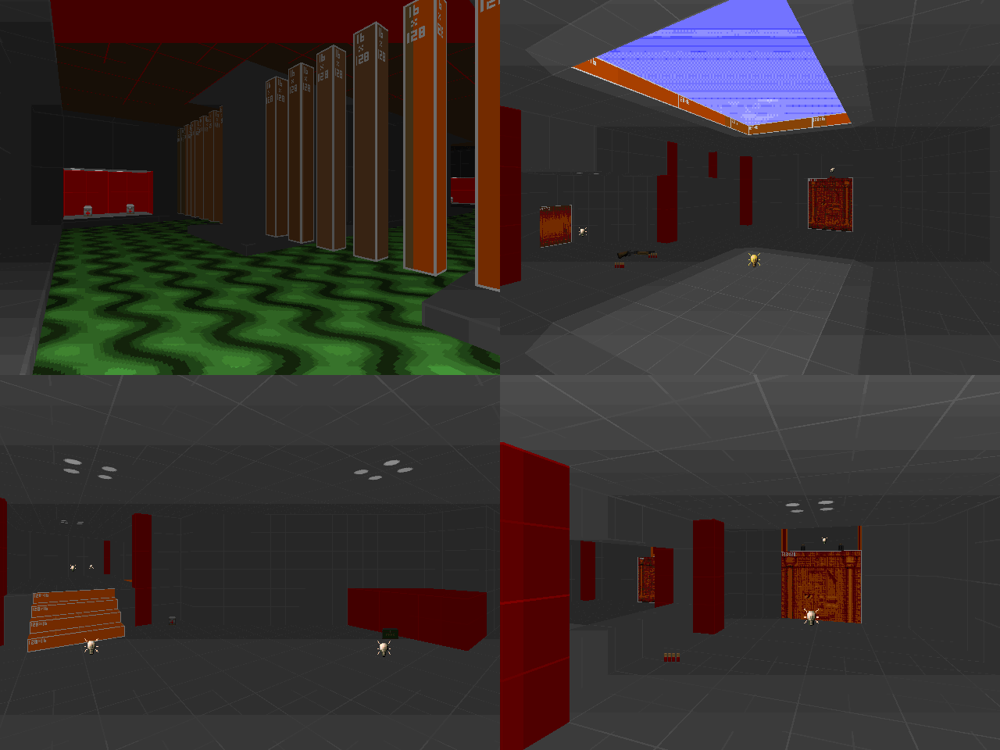

DOWNLOAD LINKS


| Year | 2024 |
| IWAD | Doom II |
| Source port | Boom/UMAPINFO-compatible |
| Game mode(s) | Single-player |
| Map(s) contributed | MAP06 |
Blocked-Out! was a community project hosted by Matakrow (formerly known as Matacrat) with a premise
similar to that of Oops! All Greyboxes! A prototyping texture set by the name of HAMTEX
had come out not long before, and maps made for Blocked-Out were to solely use textures from said texture set. The
end result is a megawad 30 maps strong, each map distinct in their gameplay but unified in their aesthetic.
My map in Blocked-Out occupies the MAP06 slot, and it's called "Untitled-200". (The map title is a reference to this
map having been my 200th Doom map at the time I made it.) With a fairly open-ended layout, the map has no shortage of
traversal options, and the gameplay on offer is equally hectic if you go in unprepared. That said, the map doesn't
overwhelm the player with objectives - in fact, you only need to find a key in order to be able to open the exit door.
Had a lot of fun making this map.